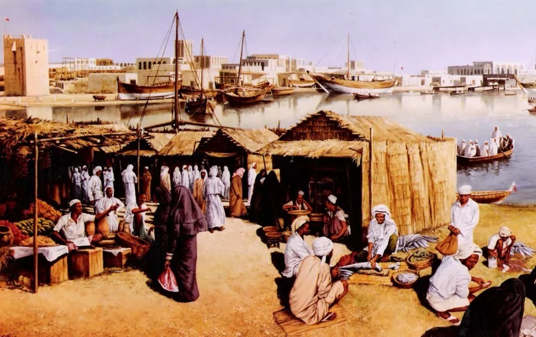

История Объединённых Арабских Эмиратов (ОАЭ) в XX веке включает в себя несколько ключевых этапов, начиная от образования государства до достижения высокого уровня экономического развития и международной значимости.
После Второй мировой войны начался процесс деколонизации, который привел к росту национального самосознания среди населения арабских стран. В конце 60-х годов XX века начались переговоры между эмиратами о создании единого государства. В результате этого процесса 2 декабря 1971 года было объявлено о создании Объединённых Арабских Эмиратов. Первым президентом нового государства стал шейх Заид бин Султан аль-Нахаян из Абу-Даби.
Первые годы существования ОАЭ были трудными из-за отсутствия финансовых ресурсов и недостатка опыта в управлении государством. Однако в начале 80-х годов XX века началась разработка нефтяных месторождений, что привело к быстрому экономическому росту. Эмираты стали одними из крупнейших производителей и экспортёров нефти в мире. Эти доходы позволили стране инвестировать в развитие инфраструктуры, образования и здравоохранения.
Помимо экономического роста, ОАЭ также достигли значительных успехов в социальном развитии. Были построены школы, больницы и другие социальные объекты. Правительство начало проводить программы по улучшению условий жизни граждан, включая обеспечение жильём, образованием и медицинским обслуживанием.
ОАЭ стали известными благодаря своим амбициозным проектам и инновациям в области архитектуры и инженерного дела. Одним из наиболее известных проектов является Бурдж Халифа – самый высокий небоскрёб в мире, расположенный в Дубае. Кроме того, ОАЭ активно развивают транспортную инфраструктуру, включая строительство метрополитенов и автострад.
ОАЭ играют важную роль на международной арене. Страна стала важным центром торговли и инвестиций, привлекая компании и инвесторов со всего мира. ОАЭ также являются активным участником международных организаций и форумов, таких как ООН и Лига арабских государств.
Таким образом, история ОАЭ в XX веке представляет собой яркий пример успешной трансформации из разрозненных пустынных эмиратов в современное и процветающее государство.